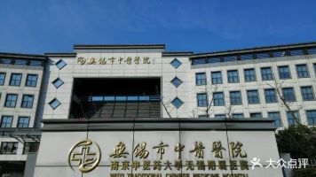

Wuxi Traditional Chinese Medicine Hospital (Wuxi Affiliated Hospital of Nanjing University of Traditional Chinese Medicine), founded in October 1954, is a modern, comprehensive, tertiary, and first-class traditional Chinese medicine hospital that integrates medical treatment, teaching, scientific research, preventive health care, and rehabilitation. In 2013, the hospital was relocated and constructed. Currently, it covers an area of 108 acres, with a total construction area of 162000 square meters, 1200 beds, and more than 1600 employees. It has Wuxi Longsha Medical School Research Institute, Wuxi Traditional Chinese Medicine Research Institute, Wuxi Traditional Chinese Medicine Bone Injury Center, and Wuxi Traditional Chinese Medicine Health Management Center. It has a national drug clinical trial institution, a national postdoctoral research workstation, a national standardized training base for resident physicians (Traditional Chinese Medicine), a national TCM research level laboratory, Nanjing University of Traditional Chinese Medicine Bone Injury Research Institute, and Jiangsu Provincial TCM Medical Record Quality Control Center. It is a national pilot unit for establishing and improving modern hospital management systems, a national demonstration hospital for improving medical services, and a pilot unit for high-quality development of public hospitals in Jiangsu Province. In 2018, as the only prefecture level hospital in the province, it passed the CAP certification of the World Federation of Chinese Medicine Societies for Traditional Chinese Medicine Research Ethics Review System. Ranked 22nd in the A+category in the performance evaluation of national tertiary public traditional Chinese medicine hospitals in 2021. Implement the Party building leadership project. Leading the high-quality development of hospitals with party building, promoting the implementation of the "dean responsibility system under the leadership of the party committee". The hospital party committee plays the core leadership role of "guiding the direction, managing the overall situation, making decisions, promoting reform, and ensuring implementation", and assumes the main responsibility of "managing the party, governing the hospital, and revitalizing the hospital". Deepen the establishment and improvement of modern hospital management systems, formulate and implement hospital regulations, and promote standardized, specialized, and refined hospital management. Promote the standardization and standardization construction of party branches, establish a three-level organizational system of party committees, party general branches, and party branches, establish branches in specialized departments, effectively transmit grassroots party building responsibilities, implement the "dual leader" cultivation project for party building business, and promote the "secretary project" of party building. Implement specialized subject construction projects. There is currently one national key clinical specialty, two key traditional Chinese medicine specialties under the National Administration of Traditional Chinese Medicine, three key TCM specialty construction units under the National Administration of Traditional Chinese Medicine, two key TCM disciplines in Jiangsu Province, ten key TCM specialties in Jiangsu Province, four key disciplines in Wuxi City, one clinical key specialty in Wuxi City, fourteen key TCM and integrated traditional Chinese and Western medicine specialties in Wuxi City, and one key TCM specialty construction unit in Wuxi City. Successfully established the Jiangsu Provincial Clinical Medical Innovation Center for Traditional Chinese Medicine Degenerative Osteoarthritis, the National Traditional Chinese Medicine (Emergency and Critical Care Medicine) Regional Diagnosis and Treatment Center Branch, the National Regional Traditional Chinese Medicine Tuina Diagnosis and Treatment Center Branch of the National Administration of Traditional Chinese Medicine, and the East China Regional Traditional Chinese Medicine Surgery Diagnosis and Treatment Center as a member unit. Strive for a new journey and contribute to the new era. The hospital will take clinical medical treatment as the "body", with pre disease health management and integrated traditional Chinese and Western medicine rehabilitation as the "wings" of the development pattern, and move forward bravely towards the development vision of building a "public traditional Chinese medicine hospital that is the first choice for medical treatment among the people in the city, a top three traditional Chinese medicine hospital that all employees are proud of, and a leading local hospital in the country's first-class province." We will make new contributions to supporting the construction of "Healthy Wuxi" and promoting the revitalization and development of the traditional Chinese medicine industry